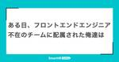
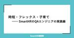
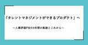
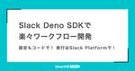
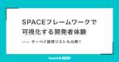

SmartHR Tech Blog
https://tech.smarthr.jp/
SmartHR 開発者ブログ
フィード

ある日、フロントエンドエンジニア不在のチームに配属された俺達は
SmartHR Tech Blog
こんにちは。データ連携チームでフロントエンドエンジニアをしている ushiboy です。 この記事では、2024 年 9 月入社でチームに参加した筆者が、データ連携プロダクトのフロントエンドのコードベースで行なった半年間の取り組みについてご紹介します。 SmartHR ではプロダクトや機能ごとにチームが編成され、各チームに 1 名～ 2 名程度のフロントエンドエンジニアが在籍しています。 組成されて間もないチームの場合、フロントエンドエンジニアが不在の場合もあります。 筆者が配属された時点でデータ連携プロダクトはすでにリリースされており日々開発が続いていましたが、これまでフロントエンドエンジニ…
8時間前
Roppongi.rb #30 がSmartHRで開催されました
SmartHR Tech Blog
こんにちは！プロダクトエンジニアのkureです。 この記事は、2025年5月8日開催のRoppongi.rb #30に協賛し、SmartHR本社8Fのイベントスペースを会場提供した際のレポートです。 Roppongi.rbとは Roppongi.rbは六本木周辺のRubyistが中心となりRubyistのためのミートアップを企画したりするRubyコミュニティです。 roppongirb.connpass.com SmartHRでの開催は、2025年2月に続いて4回目となります。 tech.smarthr.jp また、今回は Omotesando.rb との合同開催でもあり、異なる地域で活動する…
11時間前

SmartHRのプロダクトマネージャー職にご興味をお持ちの方へ 38
38
SmartHR Tech Blog
これはなに？ SmartHRのプロダクトマネージャー（以下、PM）職にご興味をお持ちの方向けに、参考になりそうな情報をまとめたものです。下記から読みたいコンテンツを選んでください。 会社紹介 募集中のプロダクトマネージャーの求人 SmartHRのPMの魅力とは？ PMメンバーによる発信 SmartHRについて 会社紹介 会社紹介資料 募集中のプロダクトマネージャーの求人 現在は以下のポジションを募集しています。 プロダクトマネージャー（労務） プロダクトマネージャー（タレントマネジメント） プロダクトマネージャー（プロダクト基盤） プロダクトマネージャー（新規事業） テクニカルプロダクトマネー…
1日前

時短・フレックス・子育て──SmartHRのQAエンジニアの実践録 1
SmartHR Tech Blog
こんにちは！QAエンジニアのhigesawaです。 今回は普段のQA文脈の発信とは趣を変えて、自身の最近の経験を踏まえたワーク・ライフ・バランスについて書いてみようと思います。 はじめに 私は現在品質保証部の中で労務ユニットAに所属しています。 以前当テックブログの品質保証部連載にて記載した SmartHR 品質保証部 労務ユニットAの紹介 にもある通り、労務ユニットAのメンバーの多くは開発チームに所属せずプロダクト横断的に、濃淡をつけた品質保証活動をしています。その中で私は、今年に入ってからは年末調整機能の開発チームに濃度高めで関わっている状況です。 プライベートでは3人家族の一児の父で、こ…
2日前

「タレントマネジメントができるプロダクト」へ〜人事評価PMの4年間の軌跡とこれから〜
SmartHR Tech Blog
はじめに こんにちは！ SmartHR プロダクトマネージャーの @ninomiya です。 私は 2021 年 4 月に SmartHR へ入社し、2025 年 4 月で5 年目に入りました。 入社当時はまだ仕様検討中だった「人事評価」プロダクトにアサインされて以来、現在まで担当しています。 以前に比べPMが増えてきたこともあり、新しいプロダクトに挑戦しているメンバーも多い中、一貫して同じプロダクトを担当している点は珍しいと思います。 この記事では、「人事評価」プロダクトの歩みとともに、プロダクトマネージャーとしての私自身の成長を振り返ります。 文中に出てくる「強くてニューゲームするには？」…
3日前

SmartHRのPMにおけるAI活用事例——Cursor、NotebookLMなど 139
SmartHR Tech Blog
はじめに こんにちは。SmartHRで勤怠管理プロダクトのPM（プロダクトマネージャー）を務めている@hiroki_mです。 私が扱う領域は勤怠管理という領域ですが、プロダクト開発の現場では、CursorやDevin、ClineなどのAI開発支援ツールを積極的に活用しています。 この記事では、私がPMとしてAI開発支援ツールをどのように活用しているかを紹介します。 AIを活用する目的はなにか PMの業務を効率化することで、PMとしてより価値を生む業務に集中するためです。 勤怠管理機能の開発チームはとても優秀で、爆速で開発を進めています。PMが開発をスケールするうえでボトルネックとならないよう、…
7日前
「SmartHR Drinkup at RubyKaigi 2025 Day 0 鯛を食べタイ！ 話しタイ！」 を開催しました
SmartHR Tech Blog
こんにちは！SmartHR でプロダクトエンジニアをしている masaru です。 SmartHR は RubyKaigi 2025 に Scheduler and Drinkup Sponsor として協賛しました。 RubyKaigi 2025 の Day 0 に「SmartHR Drinkup at RubyKaigi 2025 Day 0 鯛を食べタイ！ 話しタイ！」を開催しましたので、その様子をお届けします。 開催概要 4 月 15 日に「SmartHR Drinkup at RubyKaigi 2025 Day 0 鯛を食べタイ！ 話したい！」を開催しました。 RubyKaigi …
7日前

Slack Deno SDKで楽々ワークフロー開発 —— 設定もコードで！ 実行はSlack Platformで！ 1
SmartHR Tech Blog
こんにちは！SmartHRでコーポレートエンジニアをしている加治です。 昨年、Slackから「Slack Deno SDK」が発表されました。DenoとはNode.jsの作者によって新たに作成されたJavaScriptのランタイムです。Slack Deno SDKの登場により、Denoを用いたSlackアプリ開発がこれまで以上に容易になりました。今回はSlack Deno SDKを用いてシンプルなカスタムワークフローステップを作ってみたので共有したいと思います。 想定読者 Slackアプリを取り巻く環境の歴史は結構長く、様々な変遷を辿っています。すべてを解説することはできないので、下記の読者を…
7日前

SPACEフレームワークで可視化する開発者体験 —— サーベイ設問リストも公開！ 1
SmartHR Tech Blog
こんにちは、労務プロダクト開発本部でエンジニアリングマネージャーをしている山本です。 SmartHRではSPACEフレームワークを用いて開発者体験を可視化するサーベイを半期ごとに実施しており、これまでに2024年10月と2025年4月の2回行っています。 この記事では SPACEフレームワークの概要 サーベイ設計と設問例 集計結果とそこから得た示唆 をご紹介します。 はじめに 組織の規模も大きくなり「どの課題がチーム固有で、どれが横断的か」ということを把握するのが難しくなってきています。また、今年に入ってからはLLMの導入に対するエンジニアからの期待値を知り、施策の当たり外れを検証しやすくする…
7日前

RubyKaigi 2025初参加レポート —— 技術とコミュニティの熱量に触れて
SmartHR Tech Blog
こんにちは！権限基盤ユニット所属の kure です。 4/16 ~ 4/18 に愛媛県松山市で行われた RubyKaigi 2025 に参加してきました。 RubyKaigi に興味はあったものの、これまで参加の機会がなく、今回が初めての参加になりました。実際にどんな雰囲気なのか、セッションでどんな話が聞けるのか、期待を膨らませながら会場に向かいました。 今回は SmartHR の一員としての参加ということもあり、個人としての学びはもちろん、チームでイベントに関わる経験もできて、特別な3日間になりました。 SmartHR メンバーとしての参加 今年の RubyKaigi では、「SmartHR…
14日前
エンジニア向けCursor勉強会のハンズオン資料公開！ —— Rules、Doc、MCP、音声入力との連携も
SmartHR Tech Blog
こんにちは！タレントマネジメントプロダクト開発本部の horiyu です。 SmartHRでは、Cursor、Visual Studio CodeのAgent Mode、Clineなど様々なAI開発支援ツールの活用に積極的に取り組んでいます。 本記事では、社内で開催したCursor勉強会の内容を紹介します。 Cursorの活用については下記の記事でも紹介していますので、ぜひご覧ください。 tech.smarthr.jp 資料 以下の資料は、主に社内のエンジニア数名と新卒の方々、希望してくださった方々向けに開催したCurosr勉強会のものです。 フィードバックをいただいたのち、社内のエンジニア全…
16日前
“もうやることがない会社”なんて誤解です──SmartHRのPMが語る、いまこそ入社すべき理由
SmartHR Tech Blog
武政と佐藤 SmartHRのプロダクトマネジメント統括本部（以下、PMグループ）は、2025年4月時点でメンバー数が36名にまで拡大しました。これだけ多くのPMがいると、「すでに成熟しきった組織なのでは？」「もうやることは出尽くしているのでは？」──そんな声をいただくこともしばしばです。 でも、それは大きな誤解。 SmartHRには、既存プロダクトの進化も、新たなチャレンジも、まだまだ無数に存在します。 今回は、タレントマネジメント領域のPMとして活躍する佐藤 慎悟さんに、同じくPMである武政 成彦さんがインタビュー。入社の背景から現場でのリアル、SmartHRだからこそ味わえる成長の機会まで…
20日前
「組織」と「AI」の品質課題に挑む —— レバレッジ推進ユニットの現在地
SmartHR Tech Blog
「組織」と「AI」の品質課題に挑む ── レバレッジ推進ユニットの現在地 こんにちは！QAエンジニアのgonkmです。 前回の記事（レバレッジ推進ユニットが目指す「全社を巻き込んだ品質課題の解決」）では、私たち品質保証部直下のoverallユニットが「レバレッジ推進ユニット」として新たにスタートした経緯と、SmartHR全体の品質向上に対して組織横断的にレバレッジをかける活動に注力していくお話をさせていただきました。 今回は、ユニット発足からこれまでの具体的な取り組みの一部と、その中で得られた学びや今後の方向性についてご紹介します。特に力をいれている「部門横断での品質向上へのアプローチ」および…
20日前
仮説を立て、ユーザーを巻き込んで検証し、価値を届ける —— メッセージ機能PM gackeyさんにインタビュー
SmartHR Tech Blog
SmartHRは、新しくメッセージ機能をリリースしました！ そこで今回は、メッセージ機能の担当プロダクトマネージャー（以下、PM）のgackeyさんに、開発の裏側を伺ってきました。gackeyさんの仮説を立てて、検証し、ストーリーを組み立て、周囲を巻き込んでいく様子をお伝えできれば幸いです。 労務担当者から従業員への連絡。それだけのこと…？ —— まずは簡単な自己紹介をお願いします。 SmartHRのPMのgackeyです。入社前は、新卒で働いたブライダル企業からIT企業へ転職し、不動産系のウェブサービスのPMとして、新規事業の立ち上げやプロダクト開発に携わっていました。2020年にSmart…
20日前
SmartHRで一人目のMLエンジニアになった理由
SmartHR Tech Blog
初めまして！4月に入社したML(機械学習)エンジニアの井上耕太朗です。 MLとは何だ？メーリングリストか！いかがわしい職業ではないのか！？という方もご安心ください。この記事では、SmartHRで一人目のMLエンジニアとして入社した私が、SmartHRでのMLエンジニアとしての仕事、そしてMLエンジニアから見たSmartHRの魅力をお伝えしたいと思います！ 簡単な経歴 SmartHRでは少ない？工学博士です。大学では光学、画像処理、機械学習を組み合わせた3次元計測や裸眼立体視(任天堂3DSのようなもの)の研究をし、論文を色々書きながら海外をふらふらとして気づいたら工学博士になっていました。 20…
20日前
G.I.G. プログラムに参加しました
SmartHR Tech Blog
エンジニアのりさきゃんです。昨年、Google Cloud Japan 主催の G.I.G. プログラムに参加しました。 今回はその内容や受講時のTIPSをお伝えします。 対象読者 G.I.G. プログラム参加への参加をひかえているかた G.I.G. プログラムへ参加したいかた G.I.G.プログラム体験記 G.I.G.プログラムは、Google Cloud Japan 主催の Google Cloud Platformについて学ぶオンラインプログラムです。 3ヶ月にわたるオンラインのセミナーでは、会社の垣根を超えてエンジニアが集まりました。全3回のオンラインハンズオンに加え、Google C…
21日前
Solid三兄弟の導入と、フルソリッドな世界
SmartHR Tech Blog
こんにちは、RubyKaigiめっちゃ楽しんでいるエンジニアkinoppydです。これを書いている今日は二日目ですね。ハロー。 おなじみの Schedule.select の今年の大きなトピックは以下の5つです。 デザインの刷新 PostgreSQLからSQLite3への移行 Solid三兄弟の導入（cableはまだ使うかどうかわかりませんが……） Rails 8へのアップグレードとPWA対応 Kamalによるデプロイ 過去2回はこちらです。 tech.smarthr.jp tech.smarthr.jp 今回は第3回目として、Solid三兄弟とフルソリッド構成の話をします。 Solidの世界…
1ヶ月前
スケールアップ企業SmartHRの品質保証部でまず整えた「3つの土台」と次にむけて（25/04版）
SmartHR Tech Blog
スケールアップ企業SmartHR 品質保証部でまず整えた「3つの土台」と次にむけて（25/04版） こんにちは、品質保証部Managerのtarappoです。 品質保証部が昨年9月からおこなっている短期集中連載記事（24/09-25/04）は本記事の第12弾をもって最後となります。 短期集中連載は終わりますが、このあとも定期的にアウトプットしていきますので、ぜひチェックしてください。 連載の最後となる本記事では、この約半年間に取り組んできた「組織面」での活動について紹介します。 本記事の内容は弊社がスポンサーをした25/03/27（木）〜28（金）に開催された「JaSST'25 Tokyo」で…
1ヶ月前
RubyKaigi 2025 Day1 参加記 ──オートマトン学習によるRubyパーサーの検証
SmartHR Tech Blog
こんにちは！タレントマネジメントプロダクト開発本部の horiyu です。 SmartHRはRubyKaigi 2025に「Scheduler and Drinkup Sponsor」として協賛しています。「松山で会い鯛！」をテーマに、事前勉強会やDrinkup、スケジュールアプリの提供など様々な企画で参加しています。詳しくはSmartHR Tech Blogの記事をご覧ください！ 本記事では、RubyKaigi 2025のHiroya Fujinamiさん（@makenowjust）の発表「Make Parsers Compatible Using Automata Learning」の感想…
1ヶ月前
自分流・ファシリテーション７ヶ条
SmartHR Tech Blog
2024年11月に入社しました、プロダクトエンジニアの kaito0046です。 突然ですが、あなたは日頃ファシリテーターを務める機会はどのくらいありますか？ 私の所属する採用管理機能開発チームでは、毎朝行うデイリースクラムに加えて毎日何かしらのミーティングがあります。ほとんどのミーティングではファシリテーターが必要なため、ローテーションしていても3〜4日に一度はファシリテーターを務める機会があります。SmartHR 社内では、チーム間で差はあるものの、比較的厳格なスクラム開発が行われていることもあり、同様にミーティングが多く開催されていることと思います。 私は現所属チームには2月に配属された…
1ヶ月前
鯛しか勝たん！ 第1回「利きちゅうちゅうゼリー大会」を開催しました！ #rubykaigi
SmartHR Tech Blog
こんにちは！SmartHRのnansekiです。 この度、松山で開催されるRubyKaigi 2025に向けて、SmartHRで「第1回 利きちゅうちゅうゼリー鯛会」を開催しました！本日は、その模様をお届けします。 昨年は沖縄で開催されたRubyKaigi 2024に向けて「第1回 利きブルーシールアイス大会」を開催したので、よろしければこちらもご覧ください！ 「ちゅうちゅうゼリー」とは 「利きちゅうちゅうゼリー大会」とは ルール説明 用意した「ちゅうちゅうゼリー」は10種！ 挑戦者の紹介と意気込み 実食！ 1食目 2食目 3食目 4食目 5食目 休憩時間：悩めるスタッフ 中間ヒントタイム 6…
1ヶ月前
SmartHRのSREが目指す姿 —— インフラ課題を先回りして解決できる開発組織へ
SmartHR Tech Blog
こんにちは、エンジニア組織でマネージャーをしており、SRE組織のマネジメントも行なっている @sugamasao(id:seiunsky) です。本日はSmartHRでSRE組織を立ち上げましたというお知らせをお伝えします。 2024年に、SRE組織を立ち上げました このブログを執筆している時点でSRE組織の求人サイトはあるものの、あまり大々的なお伝えができていませんでしたがSmartHRでは2024年1月にSRE組織を立ち上げました。SmartHRでは20近くのプロダクト（多くはRailsアプリケーション）があり、各チームがそれぞれ担当するプロダクトやインフラの管理を行なっていました。その方…
1ヶ月前
RubyKaigi公式スケジュールアプリ「Schedule.select」を使って、RubyKaigiを楽しもう！
SmartHR Tech Blog
こんにちは、SmartHRプレゼンツRubyKaigi公式スケジュールアプリ「Schedule.select」の開発者kinoppyd`です。 すでにいくつかのSchedule.selectに関する技術的な記事を書いていますが、今回はそれらとは別にスケジュールアプリそのもののご紹介です！ 今年のアイコン画像 目次 目次 Schedule.select モバイルに特化したUI タイムライン プロフィールと友達機能 友達の予定はなんだろう？ チーム機能 トロフィ機能 Enjoy RubyKaigi！ 関連技術記事 Schedule.select Schedule.selectは、RubyKaigi…
1ヶ月前
SmartHRはRubyKaigi 2025に「Scheduler and Drinkup Sponsor」として協賛します！ 松山で会い鯛！
SmartHR Tech Blog
こんにちは、広報のnansekiです。RubyKaigi 2025には、Helperとして参加させていただきます。この記事では、SmartHRがRubyKaigi 2025にどのように参加するかを紹介します。 SmartHRは、RubyKaigi 2025に「Scheduler and Drinkup Sponsor」として協賛します！ 事前勉強会、Drinkup、スケジュールアプリ、事後勉強会、そしてDay 3での登壇と、今年も盛りだくさんな内容でRubyKaigiを盛り上げたい鯛と考えています。その全容を公開します！ テーマ：「松山で会い鯛！」 事前企画 「RubyKaigi 2025事前…
1ヶ月前
誕生。「SmartHRの増えてくアクキー」 —— お披露目は、RubyKaigi 2025
SmartHR Tech Blog
こんにちは！ 本日は、SmartHRの新しいノベルティを紹介させてください。 SmartHRの新しいノベルティができました！ SmartHRの新しいノベルティができました。 その名も、「SmartHRの増えてくアクキー」です！ 「SmartHRの増えてくアクキー」 「SmartHRの増えてくアクキー」は、次の3種からなるアクリルキーホルダーです。 初期セット アクキーを束ねるキーリングと、SmartHRロゴのアクキーのセットです 増えてくアクキー 追加で集めていけるアクキーです。なんと20種類あります！ 今後も増えていくかも!? 限定アクキー SmartHRが協賛する大型カンファレンスや、Sm…
1ヶ月前
アクセシビリティを考慮した階層構造のフォームUIをどう実現したか
SmartHR Tech Blog
こんにちは、SmartHR プロダクトエンジニアの ceris と gaha です。 複雑な UI コンポーネントの実装において、アクセシビリティの確保は難しい課題の1つです。 この記事では、smarthr-ui で提供している階層構造のフォーム UI コンポーネントについて、アクセシビリティを考慮しながら、どのように複雑なUIを実現したのか、その実装アプローチとアクセシビリティへの取り組みをご紹介します。 目次 目次 smarthr-ui で提供している階層構造のフォーム UI 階層表現を実現するための実装の説明 利用例 アクセシビリティのこだわりポイント デスクトップアプリのようなUIのマ…
1ヶ月前
AIコードエディタCursor大活用！ ── Cursor Rules、MCP、エラー調査
SmartHR Tech Blog
こんにちは！タレントマネジメントプロダクト開発本部の horiyu です。 SmartHRではChat GPT Plus/Proの利用やGemini・NotebookLMの活用などさまざまなAIの取り組みを行っています。 本記事では、開発チームが使用するエディタを Visual Studio Code（VS Code）から AI関連の機能が標準搭載されているCursorへ移行した体験と、その過程で得られた予想以上の効果についてご紹介します。 特に、Cursor RulesやModel Context Protocol（MCP）といったAI支援機能が、日々のキャッチアップやコードレビュー、エラー…
1ヶ月前
RubyKaigiスケジュールアプリのPostgreSQLからSQLiteへの移行
SmartHR Tech Blog
久しぶり、プログラマーのkinoppydです。前回の記事では、RubyKaigi公式スケジュールアプリ 「Schedule.select」 のデザイン刷新に関してお届けしました。 tech.smarthr.jp Schedule.selectの今年の大きなトピックは以下の5つです。 デザインの刷新 PostgreSQLからSQLite3への移行 Solid三兄弟の導入（cableはまだ使うかどうかわかりませんが……） Rails 8へのアップグレードとPWA対応 Kamalによるデプロイ 今回は第2回目として、Schedule.selectのデータベースをPostgreSQLからSQLiteへ…
1ヶ月前
なぜ我々は令和にCSVを用いた設定機能を開発したのか
SmartHR Tech Blog
こんにちは！ プロダクトエンジニアのsaitomaです！ 昨日も令和でしたが、今日も令和ですね。きっと明日も令和です。 100年後は多分令和ではありません。 今回、我々のチームでは、SmartHRの組織図機能において、CSVを用いた一括設定機能を開発しました。本記事では、なぜ令和の今、CSVを用いた設定機能を開発したのか その背景についてお話します！ SmartHRの組織図機能とは SmartHRの組織図機能とは、SmartHRに登録された従業員データから、任意の組織図の作成・共有が可能となる機能です。詳しくは「組織図」をご覧いただければと思います。 機能面だけでなく、見た目にも美しく、大変令…
1ヶ月前
Reactで大量描画しても60fps出すためのパフォーマンスチューニング術
SmartHR Tech Blog
こんにちは、SmartHRでプロダクトエンジニアをやっている @Tokky0425 です。 みなさんは普段組織で働いていますか？僕は組織で働いています。 組織で働くにあたって便利なもの、ありますよね。そう、組織図です。 SmartHR にも組織図の機能があるのですが、部署数や従業員数が多いとブラウザ上での操作が重くなってしまうという問題がありました。 最近「数万人規模の組織図での 60fps」を目指してこの組織図機能の描画パフォーマンス改善を行ったので、その中で実践したフロントエンド開発における大量描画処理の Tips を共有します。(React を前提としています) そもそも問題はどこにある…
1ヶ月前